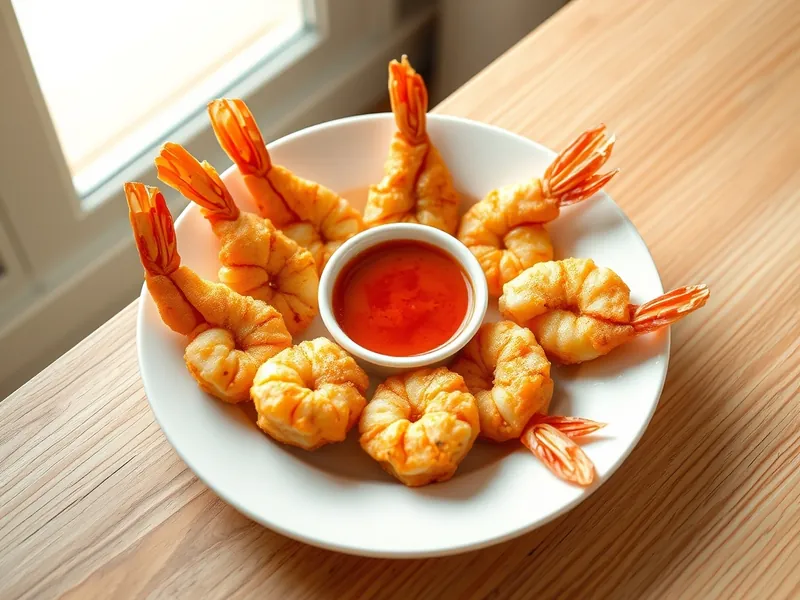

Фото: Иллюстрация ИИ, Cloudflare Workers AI
Креветки в кляре
Хрустящие очищенные креветки в лёгком кляре на газированной воде
25 мин3 порц.513 ккал на порциюБ 37 · Ж 26 · У 32Азиатская кухня
Продукты на 3 порц.
- Креветки500 г
- Мука пшеничная0,5 стак.
- Крахмал1 ст. л.
- Яйцо куриное1 шт
- Вода120 мл
- Растительное масло60 мл
- Соль2 щеп.
- Перец чёрный молотый2 щеп.
Как готовить
- Разморозьте креветки, очистите от панциря, оставив хвостики, удалите тёмную жилку и обсушите полотенцем.
- Смешайте муку, крахмал, яйцо, соль и очень холодную воду до густоты сметаны. Комочки оставьте, их не нужно добиваться.
- Разогрейте масло слоем 1 см на сковороде на среднем огне.
- Обмакивайте креветки за хвостик в кляр и жарьте небольшими партиями по 1-2 минуты с каждой стороны до золотистого цвета.
- Выкладывайте на бумажное полотенце, чтобы ушёл лишний жир. Подайте с соевым или кисло-сладким соусом.
Совет. Кляр делайте на ледяной воде прямо перед жаркой, тогда корочка получается тонкой и хрустящей.